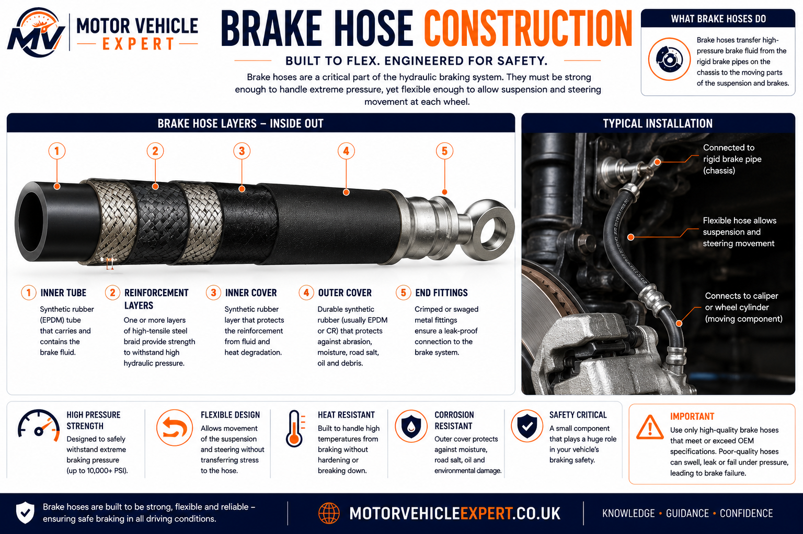
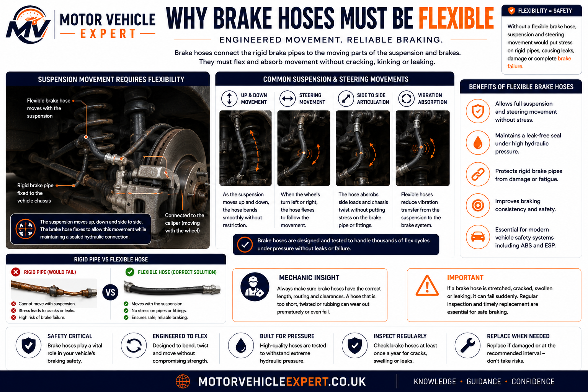
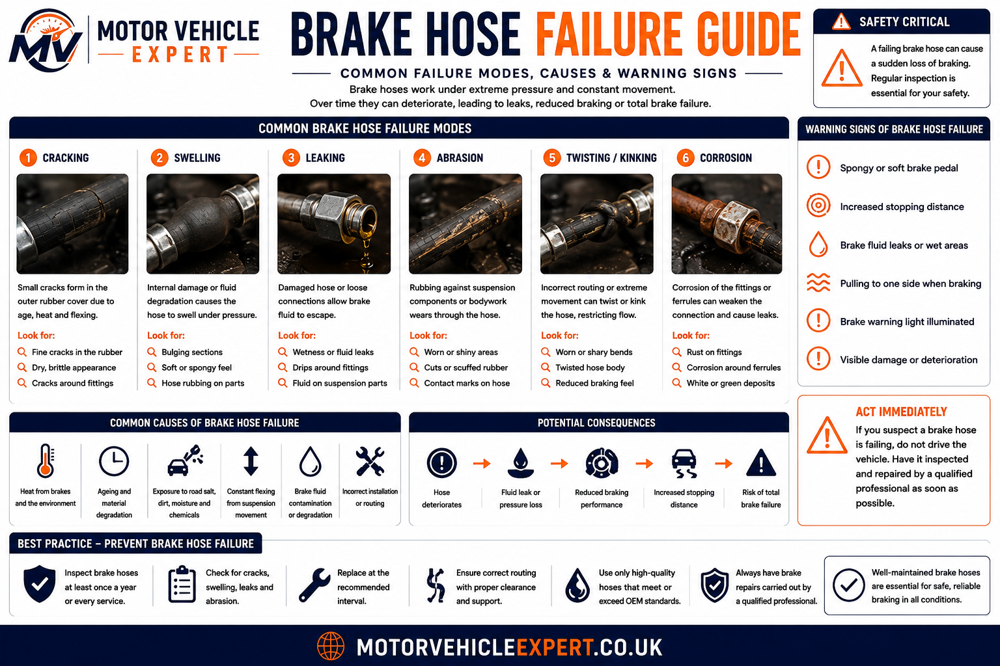
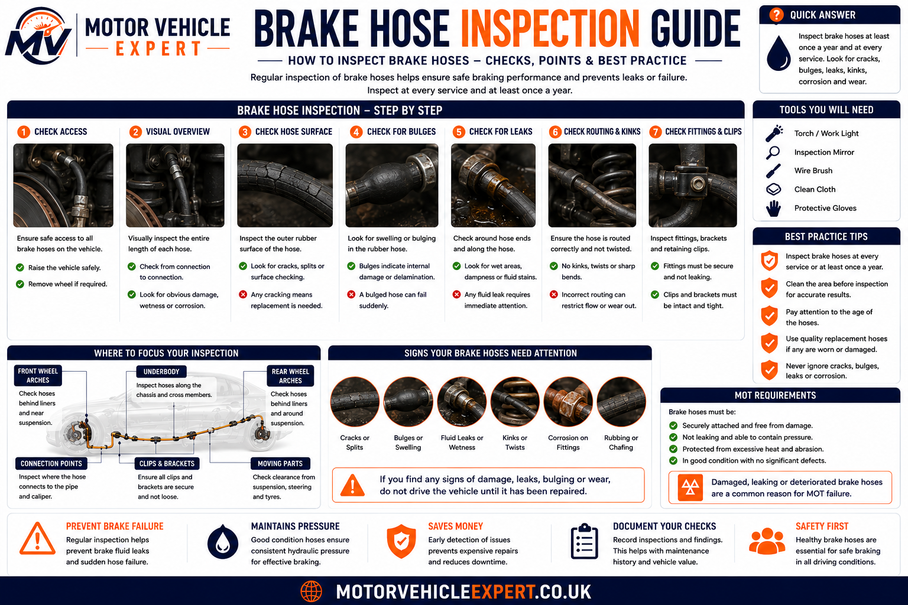

What Are Brake Hoses?
Brake hoses are flexible reinforced hydraulic hoses that connect the rigid brake pipes to the moving braking components at each wheel. They carry high-pressure brake fluid while allowing the suspension and steering to move freely without placing stress on the hydraulic braking system.
Every time the brake pedal is pressed, hydraulic pressure travels from the brake master cylinder, through the rigid brake pipes and finally through the brake hoses before reaching the brake calipers. Without flexible brake hoses, steering movement and suspension travel would quickly fracture rigid brake pipes, causing dangerous brake fluid leaks and loss of braking performance.
Purpose
Transfers hydraulic pressure between the rigid brake pipes and the moving wheel assemblies.
Location
Brake hoses are normally fitted between the rigid brake pipe and each brake caliper or rear wheel cylinder.
Safety
Any damaged, leaking or swollen brake hose should be replaced immediately to maintain safe braking performance.
Brake hoses may appear to be simple rubber components, but they perform one of the most demanding jobs in the braking system by safely containing extremely high hydraulic pressures while constantly flexing with suspension and steering movement.
Brake Hose Construction
Modern brake hoses are engineered to withstand thousands of braking cycles, high hydraulic pressures and constant movement without leaking or bursting. Most vehicles use reinforced rubber brake hoses containing multiple protective layers designed to resist expansion, abrasion, moisture and heat.

Although the outer rubber layer provides protection against water, dirt and road debris, the internal reinforcement carries the hydraulic pressure generated by the braking system. The smooth inner liner prevents brake fluid contamination while ensuring consistent hydraulic pressure reaches each wheel during braking.
Outer Cover
Protects the hose from abrasion, moisture, UV exposure and road debris encountered during everyday driving.
Reinforcement Layer
Braided synthetic reinforcement prevents the hose from expanding excessively under heavy braking pressure.
Inner Lining
A chemically resistant inner lining safely carries brake fluid while maintaining hydraulic efficiency and preventing internal deterioration.
Brake hoses are designed to flex thousands of times during normal driving, but age, heat, contamination and repeated suspension movement eventually weaken the rubber. Regular inspections help identify early deterioration long before braking performance is affected.
How Brake Hoses Work
Brake hoses form the flexible section of the hydraulic braking system, connecting the rigid brake pipes to the moving brake calipers or rear wheel cylinders. Every time the brake pedal is pressed, the brake master cylinder generates hydraulic pressure inside the brake fluid, which travels almost instantly through the brake pipes and brake hoses before reaching each wheel.
Because brake fluid is virtually incompressible, hydraulic pressure is transmitted evenly throughout the system. The brake hoses must contain this pressure while simultaneously flexing as the steering turns and the suspension moves over uneven road surfaces. This combination of flexibility and strength makes brake hoses one of the most demanding components within the braking system.
Pedal Input
Pressing the brake pedal forces the master cylinder to generate hydraulic pressure inside the brake fluid.
Pressure Transfer
Hydraulic pressure travels through the rigid brake pipes before entering the flexible brake hoses at each wheel.
Braking Force
The brake hoses deliver hydraulic pressure to the brake calipers, allowing the brake pads to clamp the brake discs and slow the vehicle.
Brake hoses do not create braking force themselves. Their role is to transport hydraulic pressure safely and consistently while allowing full steering lock and suspension movement without placing stress on the rigid brake pipes.
Why Brake Hoses Must Be Flexible
Unlike the rigid brake pipes mounted to the vehicle body, brake hoses connect to suspension and steering components that move continuously while driving. Every bump, corner and steering input changes the position of the wheels relative to the vehicle chassis. Brake hoses must accommodate these movements while maintaining full hydraulic pressure inside the braking system.
Engineers carefully design brake hose length, routing and mounting points so the hose can flex naturally without stretching, twisting or rubbing against nearby components. Correct routing is just as important as the condition of the hose itself. Even a brand-new brake hose can suffer premature wear if installed incorrectly.

Suspension Travel
Brake hoses flex every time the suspension compresses or rebounds while driving over uneven road surfaces.
Steering Movement
Front brake hoses must allow complete steering movement without stretching, twisting or contacting nearby components.
Hydraulic Pressure
Even while flexing continuously, brake hoses must safely contain extremely high hydraulic pressures generated during emergency braking.
Most premature brake hose failures are not caused by manufacturing defects but by age, incorrect routing, rubbing against suspension components or excessive twisting during installation. Always ensure replacement hoses follow the original factory routing.
Common Brake Hose Problems
Brake hoses are designed to withstand years of hydraulic pressure, suspension movement and exposure to harsh weather conditions. However, like all rubber components, they gradually deteriorate with age. Heat, road salt, moisture, ultraviolet light, oil contamination and repeated flexing eventually weaken the hose structure, increasing the risk of hydraulic failure.
Some brake hose faults develop externally and can be identified during routine inspections, while others begin inside the hose where they remain hidden until braking performance changes. Regular servicing is therefore essential because not every dangerous brake hose fault is immediately visible.
Surface Cracking
Rubber naturally hardens over time, causing surface cracks that gradually deepen as the hose continues to flex.
Brake Fluid Leaks
Any brake fluid leak reduces hydraulic pressure and should always be repaired before the vehicle is driven.
Bulging Hoses
Internal reinforcement can weaken over time, allowing the hose to expand under braking pressure and increasing the risk of rupture.
Twisted Installation
Incorrectly installed brake hoses suffer unnecessary stress every time the steering or suspension moves.
Abrasion Damage
Contact with suspension arms, tyres or bodywork gradually wears through the protective outer rubber.
Internal Restriction
Internal hose collapse can restrict brake fluid flow without obvious external damage, causing dragging brakes or uneven braking performance.
Brake hose deterioration frequently begins internally before external cracks become visible. A soft brake pedal, pulling during braking, dragging brakes or unexplained brake fluid loss should always trigger a complete hydraulic braking inspection rather than relying solely on a visual check of the hose.
Brake Hose Failure Guide
Brake hose failures range from gradual age-related deterioration to sudden hydraulic failure caused by impact damage, severe corrosion around fittings or internal reinforcement breakdown. Recognising the warning signs early can prevent expensive repairs and significantly improve braking safety.

Most brake hose failures develop progressively over several years rather than occurring without warning. Regular servicing allows technicians to identify cracks, leaks, swelling or damaged fittings before hydraulic pressure is compromised during emergency braking.
Visible Cracking
Surface cracks indicate ageing rubber and should be monitored closely during routine servicing before the outer layer begins to split.
Brake Fluid Leak
Hydraulic leaks reduce braking pressure immediately and should always be repaired before the vehicle returns to the road.
Bulging Under Pressure
Bulging indicates that the internal reinforcement has weakened and the hose could rupture during heavy braking.
Internal Collapse
The inner lining can collapse without obvious external damage, restricting brake fluid flow and causing dragging brakes or delayed brake release.
Abrasion Damage
Brake hoses rubbing against suspension arms, wheels or bodywork gradually wear through the protective outer layer, weakening the hose over time.
Corroded End Fittings
Rust around the crimped fittings or hydraulic unions can eventually cause leaks or weaken the hose connection, particularly on vehicles exposed to winter road salt.
Brake hose failures often begin internally long before obvious external damage appears. If you notice a soft brake pedal, pulling during braking, dragging brakes or unexplained brake fluid loss, have the complete hydraulic braking system professionally inspected immediately rather than relying solely on a visual hose inspection.
Brake hoses should never be repaired using tape, sealants or temporary fixes. Any hose showing leakage, severe cracking, swelling or structural damage should always be replaced with the correct specification component before the vehicle is returned to the road.
Brake Hose Inspection Guide
Regular brake hose inspections are one of the simplest ways to identify developing hydraulic braking problems before they become expensive repairs or serious safety concerns. Because brake hoses operate underneath the vehicle, they are constantly exposed to water, road salt, dirt, heat and continuous suspension movement, all of which contribute to gradual deterioration over time.
Professional inspections examine the complete length of every brake hose, including the outer rubber covering, crimped end fittings, routing, retaining brackets and surrounding components. Even minor deterioration should be monitored because damage often accelerates once the protective outer layer begins to break down.

Inspect The Rubber
Check the complete outer surface for cracking, splits, swelling, cuts or signs of abrasion caused by nearby suspension components.
Check For Leaks
Inspect every hose and both end fittings for brake fluid leaks, dampness or contamination around the crimped unions.
Inspect Routing
Confirm that each hose follows the original factory routing without stretching, twisting or rubbing during steering movement.
Check Mountings
Ensure retaining clips and support brackets remain secure to prevent unnecessary vibration or rubbing.
Steering Lock Test
Turn the steering fully from lock to lock and confirm the hoses remain free from stretching or interference.
Professional Inspection
Include brake hose inspections during every routine service and before every MOT to identify hidden deterioration early.
Many brake hose faults develop inside the hose long before external damage becomes obvious. Any change in brake pedal feel or braking performance should always be investigated as part of a complete hydraulic braking inspection.
Can Brake Hoses Be Repaired Or Must They Be Replaced?
Brake hoses are safety-critical hydraulic components and should normally be replaced rather than repaired. Unlike simple external trim or cosmetic rubber parts, a brake hose contains bonded internal layers that must safely contain high hydraulic pressure while flexing thousands of times during normal driving. Once those internal layers are weakened, split, swollen, contaminated or damaged, a surface repair cannot restore the original strength of the hose.
Temporary fixes such as tape, glue, sealant, clamps or improvised sleeves are not suitable for hydraulic brake hoses. These methods may hide visible damage, but they do not repair the internal reinforcement or restore safe hydraulic pressure capacity. A hose that leaks, bulges or shows structural damage can fail suddenly during hard braking, creating a serious safety risk.
Professional replacement involves fitting the correct specification hose, checking the adjoining brake pipes, inspecting the hydraulic unions, confirming correct hose routing and bleeding the braking system using fresh brake fluid. After replacement, the technician should confirm pedal feel, check for leaks and ensure the hose does not stretch, twist or rub during steering and suspension movement.
Many workshops recommend replacing brake hoses in axle pairs where both sides are similar in age and condition. If one front brake hose has cracked, swollen or deteriorated, the opposite side may not be far behind. Replacing both sides together can improve braking consistency, reduce future labour costs and prevent another similar repair shortly after the first.
Some vehicles use stainless steel braided brake hoses, especially performance cars or vehicles upgraded for a firmer pedal feel. These hoses can reduce expansion under pressure, but they are not maintenance-free. Braided hoses still require proper routing, secure mounting, corrosion checks around fittings and regular inspections for abrasion or damage.
Light Surface Ageing
Minor cosmetic ageing may be monitored during servicing if there are no leaks, bulges, deep cracks or structural defects.
Leaks Or Bulging
Any leaking, swollen or structurally damaged brake hose should be replaced before the vehicle is driven again.
Hydraulic Service
Brake hose replacement normally requires brake bleeding and a final hydraulic leak check before the vehicle returns to the road.
Brake hoses are inexpensive compared with the consequences of hydraulic brake failure. If a hose is leaking, bulging, deeply cracked or damaged, replacement is the correct repair. Temporary repairs should never be trusted on a safety-critical braking component.
Brake Hoses And The UK MOT Test
Brake hoses are classed as safety-critical braking components and receive careful inspection during every UK MOT test. Testers examine all visible brake hoses, hydraulic connections and mounting points for leaks, excessive cracking, bulging, abrasion, twisting, insecure routing and deterioration that could affect braking performance. Because brake hoses carry high-pressure brake fluid, even relatively minor defects can result in an MOT failure if they are considered likely to compromise safety.
MOT testers also assess whether brake hoses have sufficient clearance from suspension arms, steering components, wheels and tyres throughout their normal range of movement. Any hose that is stretched, kinked, rubbing against surrounding components or incorrectly routed may receive an advisory or fail depending on the severity of the defect.
Vehicles that repeatedly receive brake hose advisories should not simply wait until the next MOT. Rubber deterioration accelerates with age, and replacing ageing hoses early helps maintain braking performance while reducing the risk of future MOT failures.
Pass
Brake hoses remain flexible, secure, correctly routed and free from significant cracking, swelling, chafing or leaks.
Advisory
Minor age-related deterioration, light surface cracking or early wear may receive an advisory if immediate failure is not expected.
Fail
Brake fluid leaks, severe cracking, bulging, exposed reinforcement, insecure mounting, twisting or damage affecting braking performance will normally fail.
Replacing ageing brake hoses before they become an MOT failure is usually cheaper than dealing with a hydraulic failure, brake imbalance or repeated test failure. If brake hose advisories appear alongside brake pipe corrosion or brake fluid issues, treat the entire hydraulic braking system as a priority.
Brake Hose Replacement Costs UK
Brake hose replacement costs depend on vehicle design, parts quality, labour access, whether the front or rear axle is being repaired and whether brake bleeding is required after installation. Some vehicles are straightforward, while others require extra time because of corroded unions, awkward access or electronic brake system procedures.
The prices below are realistic broad UK estimates only. Final costs vary by vehicle, region, labour rate and whether additional work is needed on brake pipes, brake fluid, calipers or seized fittings.
Single Brake Hose
£90–£180Usually includes one replacement brake hose, fitting and hydraulic brake bleeding where required.
Front Axle Pair
£180–£320Replacing both front hoses together helps maintain balanced braking performance and reduces repeat labour costs.
Performance Vehicles
£220–£500+Stainless steel braided hose kits fitted to performance vehicles cost more due to specialist parts and installation time.
Replacing ageing brake hoses before they fail is usually much cheaper than repairing the damage caused by a burst hose or contaminated braking system. Whenever one hose has deteriorated significantly, many workshops recommend inspecting or replacing the matching hose on the opposite side of the axle.
Used Car Buying Checks
Brake hoses provide valuable clues about how well a vehicle has been maintained throughout its life. Because they are constantly exposed to water, road salt, dirt and suspension movement, worn brake hoses often indicate that other braking components may also have received little preventative maintenance. Spending a few minutes inspecting the hydraulic braking system before purchasing a used car can prevent expensive repairs after the sale.
When inspecting a used vehicle, examine each brake hose along its entire visible length. Look for cracks, swelling, abrasion, fluid leaks, corrosion around the metal fittings and evidence of poor previous repairs. Any deterioration should be reflected in the purchase price because replacement normally requires brake bleeding and additional workshop labour.
A careful inspection of the brake hoses should form part of every used car assessment. Even where the visible rubber appears acceptable, signs of brake fluid leakage, corroded fittings or previous poor-quality repairs may indicate wider neglect throughout the hydraulic braking system.
Inspect Every Hose
Examine all four brake hoses for cracking, swelling, abrasion, leaks or signs of ageing before agreeing a purchase.
Review MOT History
Previous MOT advisories for brake hoses, brake pipes or hydraulic leaks may indicate ongoing maintenance issues.
Road Test
A soft brake pedal, pulling under braking or dragging brakes may indicate hydraulic problems requiring further investigation.
If brake hoses appear heavily cracked, swollen or damp with brake fluid, budget for immediate replacement and inspect the entire braking system, including the brake pipes, calipers, discs and brake fluid condition before completing the purchase.
Brake Hose FAQs
What do brake hoses do?
Brake hoses connect the rigid brake pipes to the moving braking components at each wheel. They safely carry hydraulic brake fluid while allowing the suspension and steering to move freely.
How long do brake hoses last?
There is no fixed replacement interval for every vehicle. Brake hoses should be inspected during every service and replaced whenever significant cracking, swelling, leaks or deterioration are found.
Can brake hoses fail an MOT?
Yes. Brake hoses can fail an MOT if they are leaking, excessively cracked, bulging, insecure, twisted, chafing against other components or likely to fail under braking pressure.
Can brake hoses cause a soft brake pedal?
Yes. Internally weakened or expanding brake hoses can reduce hydraulic efficiency and contribute to a soft brake pedal, although air in the braking system or other hydraulic faults may produce similar symptoms.
Should brake hoses be replaced in pairs?
Most professional workshops recommend replacing brake hoses in axle pairs because both sides normally experience similar wear and environmental conditions, helping maintain balanced braking performance.
Can brake hoses be repaired?
No. Brake hoses are safety-critical hydraulic components and should always be replaced rather than repaired if they leak, bulge, crack or suffer structural damage.
Related Brake Guides
Brake hoses are one part of the complete hydraulic braking system. Continue exploring the Motor Vehicle Expert braking knowledge cluster using the guides below.
Disc Brakes Explained
Complete guide to modern hydraulic disc braking systems.
Brake Pads Explained
Learn how brake pads create friction and wear over time.
Brake Discs Explained
Understand brake disc construction, wear and replacement.
Brake Calipers Explained
Discover how hydraulic pressure becomes braking force.
Brake Fluid Explained
Understand why clean brake fluid is essential.
Brake Pipes Explained
Learn about the rigid hydraulic lines feeding the brake hoses.
Brake Master Cylinder Explained
Planned guide covering hydraulic pressure generation.
Brake Servo Explained
Planned guide explaining brake assistance and pedal effort.
Brake Disc Replacement Cost UK
Typical UK brake disc replacement prices.
Brake Caliper Replacement Cost UK
Typical UK brake caliper repair and replacement costs.
Brake Pad Replacement Cost UK
Typical UK brake pad replacement prices.
Car Fails MOT On Brakes
Understand brake-related MOT failures and repairs.
Together these guides explain every major component of a modern hydraulic braking system, helping UK drivers understand maintenance, diagnosis, MOT requirements and repair costs.
Understanding Brake Hoses Improves Braking Safety
Brake hoses may look like simple flexible rubber pipes, but they perform one of the most demanding jobs in the entire braking system. Every time the brake pedal is pressed, they must safely carry high hydraulic pressure while constantly moving with the steering and suspension. If they crack, swell, leak or collapse internally, braking performance can be reduced very quickly.
Routine inspections, correct installation and timely replacement help prevent hydraulic brake failure, MOT problems and expensive repair bills. Brake hoses should always be considered alongside the condition of the brake pipes, brake fluid, brake calipers, brake pads and brake discs because the braking system only works safely when every component is in good condition.
Whether you are maintaining your own vehicle or inspecting a used car before purchase, understanding how brake hoses function makes it easier to identify developing hydraulic faults before they become expensive or dangerous. Combined with regular brake fluid changes and routine brake inspections, healthy brake hoses play a vital role in keeping the vehicle safe, predictable and ready for MOT testing.
Never ignore cracked, swollen, leaking or badly routed brake hoses. They are safety-critical hydraulic components, and replacement is always safer than attempting a temporary repair.
About This Brake Hose Guide
This guide has been produced by the Motor Vehicle Expert Editorial Team using recognised hydraulic braking principles, UK servicing guidance and professional workshop experience. It is intended to help UK drivers understand brake hose operation, identify developing faults and make informed maintenance, repair and used car buying decisions.
The information in this guide is educational and should not replace a professional inspection where a safety-critical braking fault is suspected. If brake fluid leaks, poor pedal feel, pulling under braking or visible hose damage are present, the vehicle should be inspected by a qualified technician before further use.
As the Motor Vehicle Expert braking knowledge cluster continues to expand, this guide will be reviewed and updated to reflect current UK workshop practices, MOT inspection guidance and the latest developments in hydraulic braking technology.
This guide forms part of the Motor Vehicle Expert Braking Knowledge Cluster and will continue to be updated as new braking guides, repair information and UK MOT guidance are published.